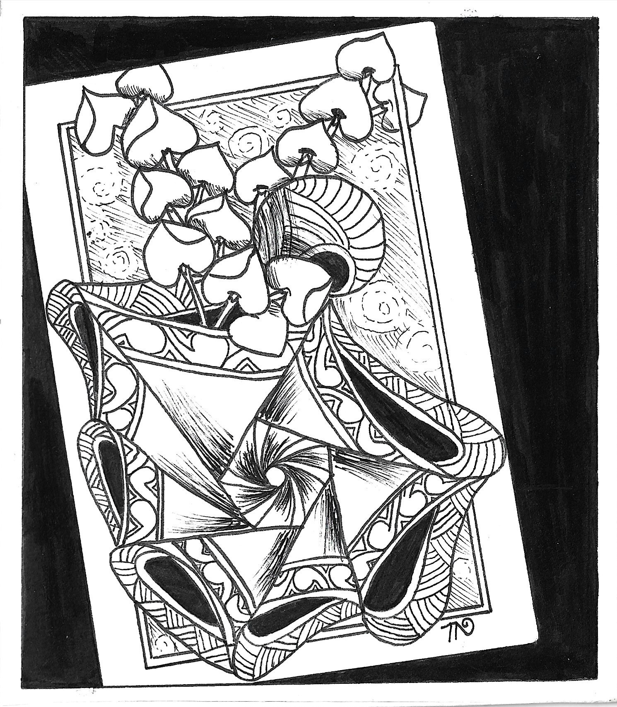

傑出事蹟： 獲金鼎獎作曲獎，靜宜大學榮譽博士學位、金曲獎特別貢獻獎、國家二等景星勳章殊榮等。
🎓 歷屆傑出校友典藏


傑出事蹟： 1989年長榮管理學院成立，加入「長榮管理學院董事會」董事。
傑出事蹟： 東海大學傑出校友(2010) 四十年間，曾受邀擔任指揮和無數國內外和唱團與樂隊合作。
傑出事蹟： 歷任台南神學院「基督與歷史學」教授、社會研究所所長、榮譽教授、台語文化教室主任。致力於基督教神學及台灣與文教學，身為民主鬥士，喚起台灣的民主意識。
傑出事蹟： 擔任長榮中學校長廿七年，一圓長榮人的夢想，創辦長榮大學，長榮幼稚園，成立「長榮學院」，廣設職業科增進長榮的競爭力，為長榮的長程規劃立下不可磨滅的功勞
傑出事蹟： 被號稱「台灣拉赫曼尼諾夫的浪漫鋼琴詩人」集鋼琴家、指揮家、作曲家於一身。以歷史使命的心情創作一首充滿感情與生命光輝的 <1947 序曲> 震撼國際的台灣音樂史詩。本校120週年校慶『美哉長榮』亦是蕭泰然的作品。
傑出事蹟： 被號稱「台灣拉赫曼尼諾夫的浪漫鋼琴詩人」集鋼琴家、指揮家、作曲家於一身。以歷史使命的心情創作一首充滿感情與生命光輝的 <1947 序曲> 震撼國際的台灣音樂史詩。本校120週年校慶『美哉長榮』亦是蕭泰然的作品。